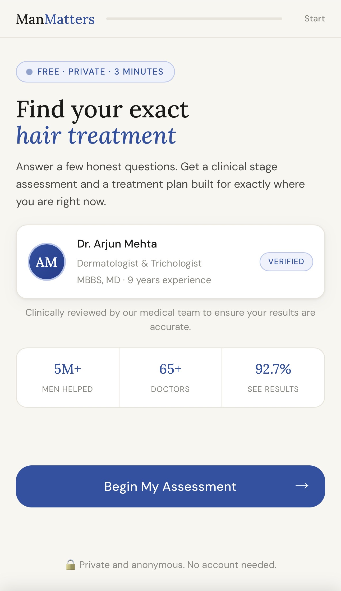
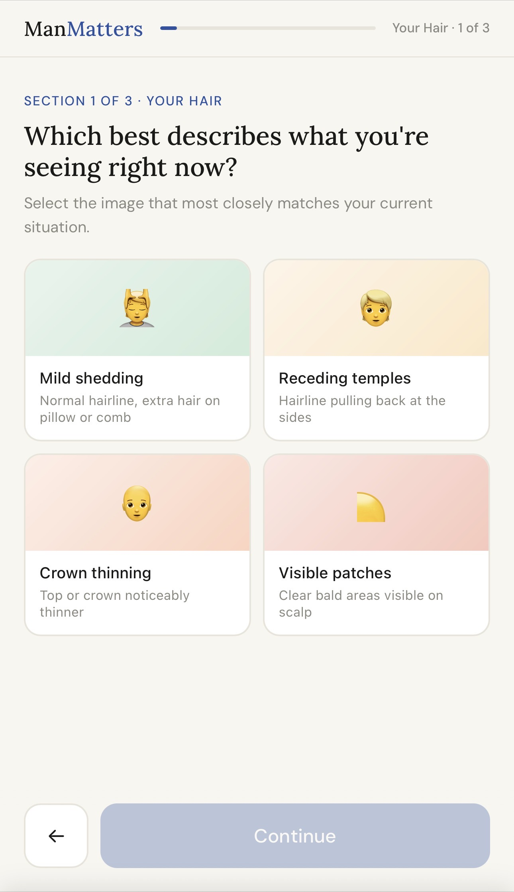
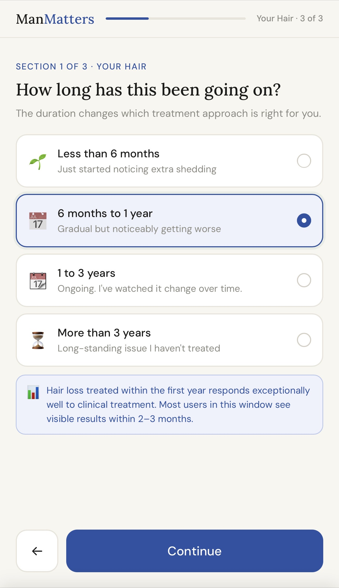
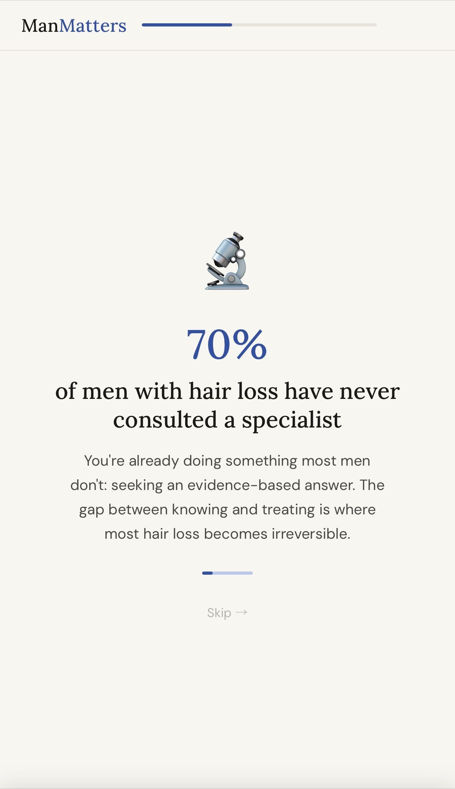
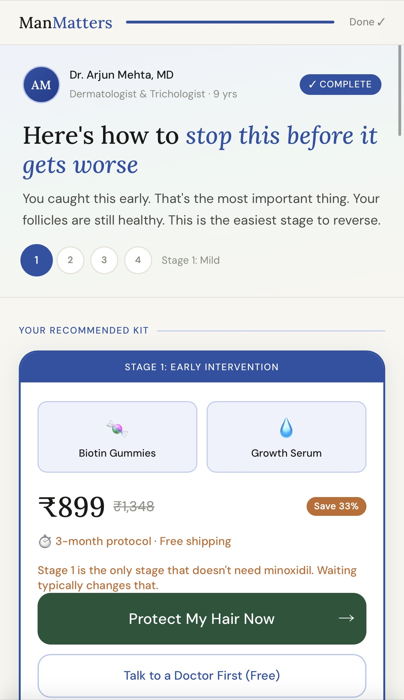
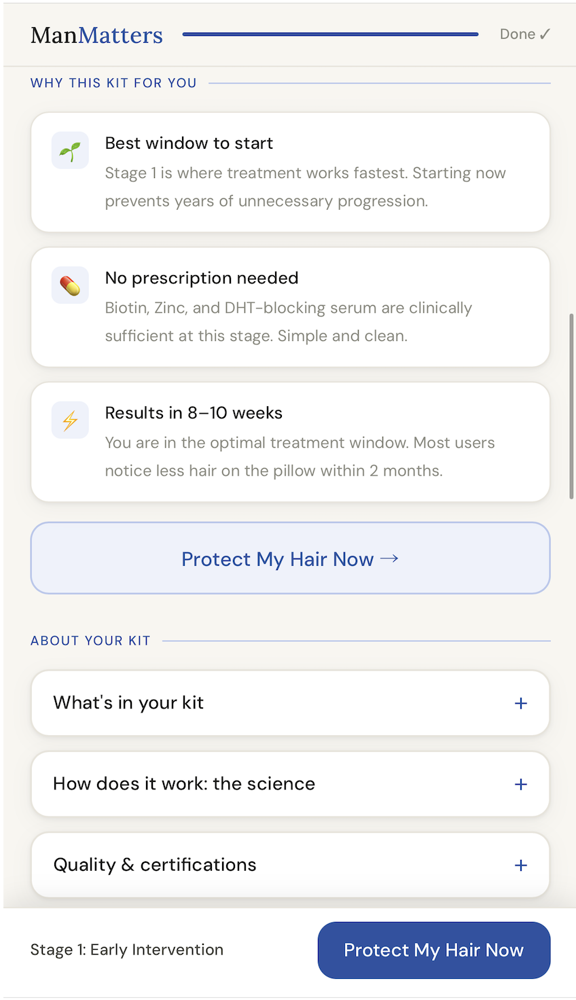
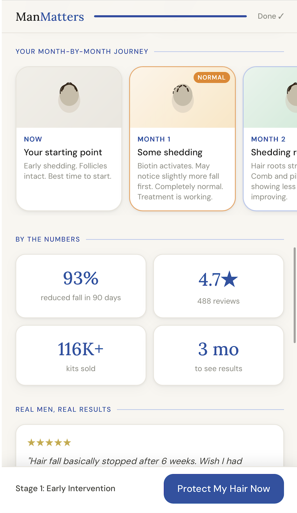
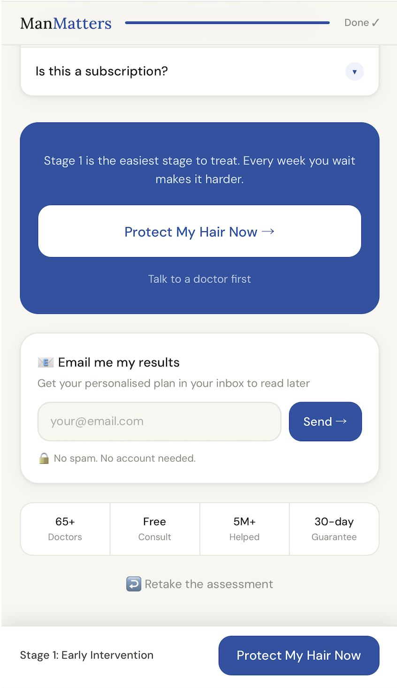

AI Hair Health Diagnostic
& Recommendation Quiz
A conversational, mobile-first diagnostic tool that identifies a user’s hair loss stage from their answers, explains what’s causing it, and recommends the right product, putting them one tap away from buying. Built end-to-end using AI-native development.
A universal e-commerce friction: which product is for me?
Health and wellness e-commerce faces a universal challenge: users land on product pages without enough knowledge to self-diagnose their condition. They see a range of products and have no confident way to pick the right one.
For hair loss specifically, this friction is acute. Hair thinning exists on a clinical spectrum, from early frontal recession to visible crown loss, and each stage benefits from a different product combination. Showing every user the same generic product page creates confusion, leads to wrong purchases, and causes significant drop-off.
The existing path was: user lands on page → sees multiple stage options → picks one without guidance → bounces or buys the wrong thing.
Too many choices, not enough context
Users face a medical self-assessment with no clinical guidance, no confidence, and no clear next step.
The stage selection screen
Users asked to self-identify their hair loss stage without any education leads to hesitation, wrong choices, or exits.
Turn the product page into a personalised conversation
The insight was simple: users don’t need another dropdown. They need a knowledgeable guide that asks the right questions, explains what’s happening, and then tells them exactly what to buy and why.
A conversational quiz experience could flip the dynamic entirely. Instead of users trying to self-diagnose from static content, the product walks them through a structured assessment, stages their hair loss from their answers, and delivers a confident, personalised recommendation.
“The goal: at the end, the user should know exactly what to buy and why, and be one tap away from doing it.”
Quiz Completion Rate
What % of users who start the quiz finish it. Designed against drop-off with progressive disclosure, one question at a time, and a conversational tone.
Post-Quiz Purchase Conversion
What % of completers add to cart or buy. Driven by confidence in the recommendation: personalised reasoning, stage explanation, and a clear, single CTA.
A conversational diagnostic, end-to-end
The quiz is a mobile-first, single-page web app with a fully dynamic recommendation engine. Every screen, question, and result is designed to reduce friction and increase confidence.
The experience, screen by screen

Clear problem framing before question one reduces uncertainty and anchors the user's intent to complete.

One question at a time lowers cognitive load, directly improving quiz completion rate.

Each answer builds the diagnostic picture, so users feel heard, not interrogated.

Educational interstitials build trust mid-quiz and prime the user to accept the recommendation.

Naming the user's stage creates an 'aha' moment: they feel diagnosed, not sold to.

Explaining the cause links their symptom to science, building the confidence needed to act.

Personalised recommendation with specific reasoning removes the last doubt before purchase.

Single CTA at peak confidence: one tap from purchase with zero competing distractions.
AI-native development: PM + Claude Code = shipped product
This project is a demonstration of what AI-native product development looks like in practice. I went from brief to deployed product solo, without a developer, designer, or agency.
I used Claude Code as my development partner throughout. The workflow was iterative: define the problem and spec, prompt for the implementation, review and test, then iterate on UX and logic together. Every question, screen, and algorithm was shaped through this loop.
The recommendation engine, mapping user answers to hair loss stages and then to specific product kits, was designed as a PM problem first (what signals predict stage?) and then implemented through AI-assisted code.
There was no design-to-dev handoff. No sprint planning. No dependency on an engineering team. The product was specced, built, iterated, and deployed in days.
Intentionally lightweight
HTML, CSS, and vanilla JS with no framework overhead. Chosen for speed, portability, and zero build-step deployment to GitHub Pages.
Spec → Prompt → Test → Ship
I authored the quiz logic, UX decisions, recommendation framework, and copy. Claude Code wrote and iterated the implementation.
Every decision traced back to two metrics
Metric-first feature design
Before writing a single line of code, I defined the two metrics that mattered. Then worked backwards: what UX decisions improve completion rate? What builds enough confidence to convert? Every feature either served a metric or was cut.
What this project demonstrates
- AI-native PM execution: I can ideate, spec, build, and deploy a live product solo without an engineering team, using AI tools as a force multiplier. This is a fundamentally different speed and capability for a PM.
- Product thinking from first principles: I framed the problem (friction on a product page), identified the right success metrics (completion rate & conversion), and designed backwards from them, not from what was technically easiest.
- Conversational UX design: The quiz is designed to feel like a conversation, not a form. This is a deliberate UX decision tied directly to completion rate: the experience should feel guided, not interrogated.
- Trust architecture: The result screen isn’t just a recommendation. It’s a confidence-builder. Stage education → cause explanation → personalised recommendation → CTA. Each step earns the right to ask the user to buy.
- Shipping over decks: The brief asked for a live, deployed, testable product, not a prototype or presentation. I shipped a live URL. This is what AI-native product building makes possible.